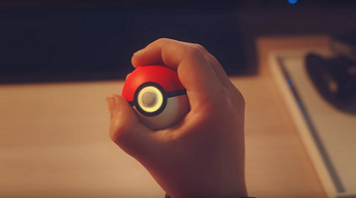

Pokéball Plus: ¿para qué sirve?

La noche de ayer estuvo llena de sorpresas para los pokéfans, hubo tantos anuncios emocionantes que no terminaríamos de expresarnos en un simple post. Los rumores se hicieron verdad, se anunciaron los juegos para switch Pokémon: Let's GO! Pikachu / Let's GO! Eevee, además del cúbico juego digital Pokémon Quest disponible desde ya para Nintendo Switch, haciendo que los usuarios de móviles tengan que esperar a finales de junio para gozar del titulo en su smartphone.
Un sin fin de emociones nos envolvieron ayer, y una de las sorpresas que vimos fue el anuncio de un nuevo controlador con forma y apariencia de una Pokéball, que estará disponible a partir del 16 de Noviembre del presente año 2019.
Sin duda tiene una apariencia bastante atractiva, ¿pero realmente es necesario?, bien, este controlador no es que sea imprescindible, de hecho viene a ser más que nada un capricho, pero tiene funciones particularmente atractivas que seguramente ningún fan de la franquicia querrá dejar pasar por alto, ¿alguna vez soñaste con sacar a tu Pokémon favorito del juego y llevártelo contigo? bueno, pues esto es casi posible con la Pokéball plus.
El periférico busca añadir otro nivel de interacción con los juegos, y puede ser usado como sustitutivo de los Joy-Con a la hora de disfrutar de Pokémon Let's Go, Pikachu! / Pokémon Let's Go, Eevee! La Pokéball Plus viene equipada con un sensor de movimiento, cuenta con función de vibración HD, emite sonidos y se ilumina con diversos colores. También tendrá un curioso incentivo, y es que los usuarios pueden guardar en ella las criaturas que elijan en la nueva aventura exclusiva de Nintendo Switch y sacarlo a pasear por las calles de su ciudad para ganar recompensas.
Como decíamos, Pokéball Plus funciona similar a un Joy-Con, permitiendo al usuario moverse, luchar, navegar por los menús y hacer prácticamente todo con la bola. Obviamente el punto más interesante llega a la hora de atrapar pokémon, invitando a los usuarios a hacer un movimiento similar al que haría un entrenador de la serie. Para hacer más realista este momento, también emitirá luz y sonido.
Al igual que con Pokémon GO Plus, el usuario tiene a su disposición el uso de la Pokéball Plus cuando esté manejando Pokémon GO en un teléfono inteligente compatible para ayudarle en su búsqueda de nuevas capturas. Sin necesitar de estar siempre mirando la pantalla, el aparato avisará mediante vibración y luces al jugador de la presencia de un pokémon cercano que podrá apresar con una simple pulsación de un botón. Diferentes patrones de luz comunicará al usuario el éxito o no de su captura.
Algo de lo más agradable es el uso de luces de colores y la vibración característica de este periférico. El director de Game Freak, Junichi Masuda mencionó: "Nos aseguramos de incorporar eso en la Pokéball Plus, de manera que en adición a la vibración HD y el encendido de luces, te hace sentir como si realmente hubieras atrapado un Pokémon y estuviera dentro de la pokéball."